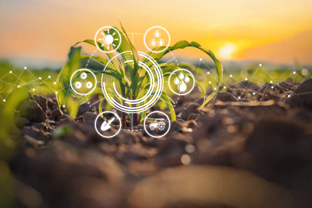

Unit II - Environment Control Systems
Artificial Light Systems
Artificial light systems are designed to supplement natural light to optimize crop growth. They are essential in controlled environments like greenhouses where sunlight availability might be limited.

Management of Crop Growth in Greenhouses
Effective management of crop growth in greenhouses involves controlling environmental factors such as temperature, humidity, and light to enhance plant growth and yield.
Simulation of CO2 Consumption
Simulating CO2 consumption in greenhouses helps optimize plant growth by ensuring adequate carbon dioxide levels for photosynthesis.
On-line Measurement of Plant Growth
Online measurement systems provide real-time data on plant growth, enabling precise adjustments to environmental conditions in greenhouses.
Models of Plant Production and Expert Systems in Horticulture
Models and expert systems are used to predict plant production outcomes and provide decision-making support in horticultural practices.